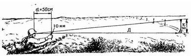
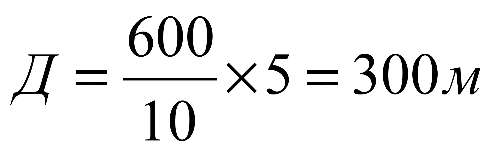
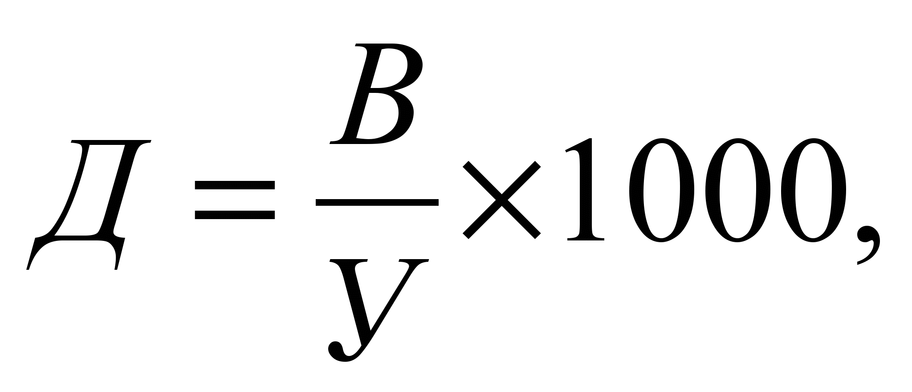
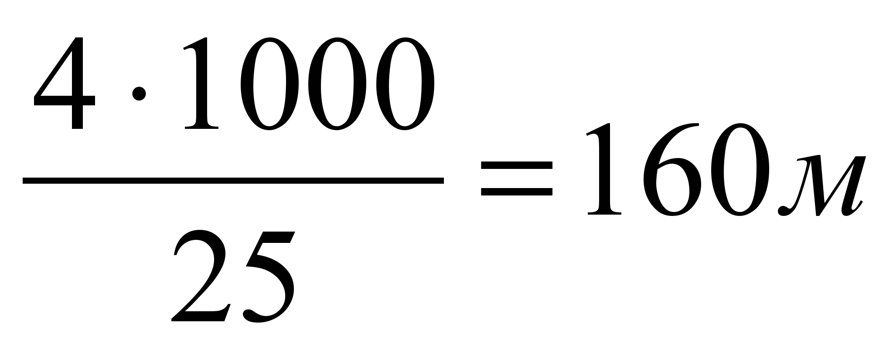
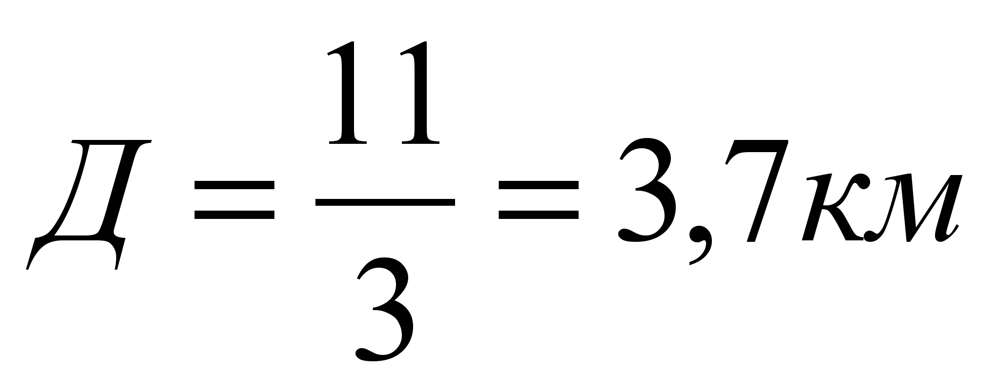
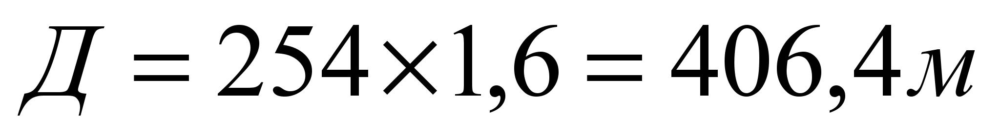
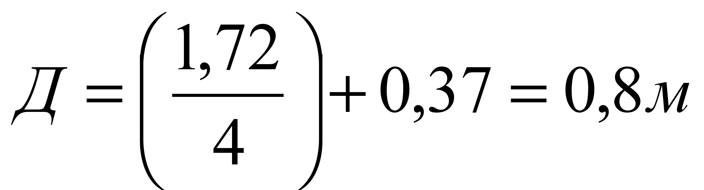
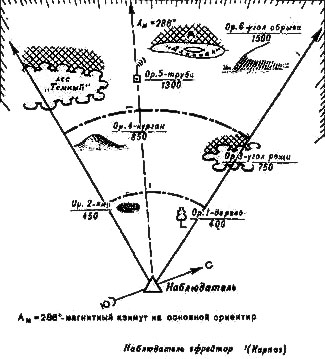

Разведподготовка
Тема 2. Наблюдательный пост. Изучение и разведка местности
Занятие 1. Наблюдательный пост. Изучение и разведка местности
Организация непосредственного охранения наблюдательного поста.
Определение характера действий противника по различным признакам.
Изучение местности в назначенном секторе по зонам для наблюдения.
Определение расстояния до ориентиров и характерных местных предметов. Составление схемы местности.
Разведка местности и противника с использованием средств освещения местности и подслушивание.
Тема 1. Организация, вооружение и тактика действий подразделений армий основных иностранных государств Организация, вооружение и тактика действий подразделений армий основных иностранных государств
1. Организация, вооружение и тактика действий пехотных (мотопехотных, разведывательных) взводов армий основных иностранных государств на ТВД.
Кардинальные изменения в мире, происшедшие в 90-х годах, привели к пересмотру ведущими западными странами и блоком НАТО в целом военно-стратегических концепций, планов строительства Вооруженных Сил и их технического оснащения. В связи с этим военно-политическое руководство Североатлантического союза взяло курс на сокращение численности Вооруженных Сил.
Одновременно с сокращением решается вопрос повышения их боеспособности за счет повышения качества оружия, совершенствования тактики действий подразделений, частей, соединений и объединений. На основе перевооружения и реорганизации Сухопутных войск, стран-участниц блока НАТО, пересматриваются и способы боевых действий соединений, частей и подразделений.
Именно поэтому в приказах и директивах Министра обороны и главнокомандующего Сухопутными войсками Вооруженных Сил Российской Федерации подчеркивается необходимость глубокого изучения всеми военнослужащими организационно-штатной структуры, вооружения, боевой техники и тактики боевых действий частей и подразделений армий основных стран НАТО (США, Германии, Франции, Великобритании, Турции), а также армий основных стран Азиатско-Тихоокеанского региона (Республики Корея, Корейской Народно-Демократической Республики, Японии, Китая).
Организация, вооружение и тактика действий пехотных (мотопехотных, разведывательных) отделений, взводов, рот армий основных иностранных государств.
В современных вооруженных конфликтах важная роль отводится Сухопутным войскам. В странах НАТО Сухопутные войска являются самым многочисленным видом Вооруженных сил и составляют более 50% от их общей численности.
Сухопутные войска являются одним из видов Вооруженных сил НАТО и предназначены для ведения боевых действий совместно с ВВС и ВМФ, а также с войсками союзников альянса при возникновении вооруженных конфликтов любой интенсивности в разных районах мира.
В настоящее время наиболее подготовленными и оснащенными современным оружием в странах НАТО являются войска армий США, Германии и Турции.
Все существующие в Сухопутных войсках США дивизии принципиально имеют идентичную организационно-штатную структуру.
Каждая включает два основных элемента:
- дивизионная основа;
- боевые батальоны различных типов (мпб, тб, пб, пдб и др.).
- cоотношение и тип боевых батальонов определяют тип дивизии.
Кроме того, по своему предназначению и боевому использованию дивизии США делятся на «тяжелые» (оснащенные тяжелой гусеничной бронетехникой) и «легкие» (не имеющие на вооружении тяжелой бронетехники).
«Тяжелые дивизии» (мд, бртд) в основном используются на Европейском театре военных действий (ТВД), в условиях ведения боевых действий высокой и средней интенсивности, при хорошо развитой инфраструктуре, на местности, позволяющей создавать глубоко эшелонированные механизированные (бронетанковые) группировки.
«Легкие дивизии» (лпд, пд, мтд, вдд, вшд). Учитывая их высокую мобильность, используются для быстрой переброски и ведения боевых действий, преимущественно низкой деятельности, главным образом на слабо оборудованных театрах военных действий и для действий в особых условиях (лес, горы, крупные населенные пункты и др.).
Механизированные (мотопехотные), бронетанковые (танковые) дивизии являются основными общевойсковыми тактическими соединениями Сухопутных войск, ведут боевые действия, как в составе армейского корпуса, так и самостоятельно.
Выполняют задачи во всех видах боя, как с применением, так и без применения ядерного оружия.
Мотопехотные (танковые) батальоны являются основными общевойсковыми тактическими подразделениями механизированных (танковых) дивизий (бригад) Сухопутных войск армии США.
Командир бригады с учетом наличных сил и средств, выделенных ему командиром дивизии, на период выполнения боевых задач на базе мотопехотных и танковых батальонов создает обычно батальонные тактические группы, которые в зависимости от состава могут быть трех видов:
- мотопехотные;
- анковые;
- сбалансированные.
Оптимальное сочетание разнородных сил и средств под единым управлением в составе батальонных тактических групп, по взглядам американского командования, позволяет повысить эффективность использования новых систем оружия и военной техники, а, следовательно, наиболее полно реализовать основные принципы концепции «Воздушно-наземная операция (сражение)».
Смешанный батальон «тяжелой» мотопехотной бригады численностью около 749 человек имеет следующий состав:
- штаб и штабную роту батальона;
- 2 мотопехотные роты;
- 2 танковые роты;
- транспортное отделение.
На вооружении смешанного батальона находятся:
- 28 ед. танков М1 «Абрамс»;
- 60 ед. БМП М2, М3, М7 «Брэдли» и БТР М113;
- 6 ед. 120-мм самоходных миномета;
- 20 ед. ПУ ПТРК «Джавелин»;
- около 40 пулеметов M240G.
По мнению военных специалистов, данная организационно-штатная структура и вооружение смешанного батальона позволят ему выполнять поставленные задачи в любых условиях обстановки.
Тема 2. Наблюдательный пост. Изучение и разведка местности
Занятие 1. Наблюдательный пост. Изучение и разведка местности
1. Требование к месту расположения наблюдательного поста и его выбор на местности. Состав наблюдательного поста. Средства наблюдения разведки.
Наблюдение - один из основных способов ведения разведки. Оно ведется непрерывно, днем и ночью, в любых условиях обстановки. Ночью в условиях ограниченной видимости наблюдение дополняется подслушиванием.
Место НП должно обеспечивать:
хороший обзор местности и НВФ (противника) на возможно большую глубину;
скрытые подступы к нему;
удобство для действий наблюдателей;
размещение и развертывание наблюдательных приборов, средств связи и другого оборудования;
укрытие поста от наблюдения и огня НВФ (противника);
наблюдение за действиями своих подразделений и возможность скрытного выдвижения в их расположение.
Внешне место наблюдательного поста ничем не должно отличаться от окружающей местности. При расположении на местности с большим количеством местных предметов место наблюдательного поста может оборудоваться в виде характерного местного предмета (дерева, кочки, пня, крупного камня, и т.п.).
Место для наблюдения занимается скрытно. Наблюдатели ведут разведку, ничем себя не обнаруживая на протяжении всего времени наблюдения.
В состав наблюдательного поста назначаются 2-3 наблюдателя из числа подготовленных для этого военнослужащих, один из которых назначается старшим наблюдательного поста.
Старший наблюдательного поста руководит действиями наблюдателей.
Он обязан:
ставить задачи наблюдателям;
определять расстояния до ориентиров и характерных местных предметов;
составлять схему ориентиров и схему местности;
определять порядок и время смены наблюдателей;
организовывать инженерное оборудование (дооборудование) и маскировку наблюдательного поста;
проверять исправность приборов наблюдения и средств связи;
выполнять обязанности наблюдателя;
контролировать работу других наблюдателей;
записывать результаты разведки в журнал наблюдения;
наносить результаты наблюдения на карту (схему) и в установленное время докладывать командиру (начальнику), выставившему пост;
немедленно докладывать о резких изменениях в положении и действиях противника (НВФ), об обнаруженных важных объектах (целях), о радиоактивном, химическом, бактериологическом (биологическом) заражении местности.
Наблюдатель обязан:
знать разведывательные и демаскирующие признаки объектов и целей, под-готовки НВФ (противника) к применению оружия и боевой техники, к ведению раз-личных видов тактических действий;
знать приборы наблюдения и связи, готовить их к работе, содержать в исправности и уметь пользоваться ими;
знать ориентиры, условное наименование местных предметов и уметь быстро находить их на местности;
вести непрерывное наблюдение за НВФ (противником), отыскивать объекты (цели), определять их местонахождение, своевременно докладывать о результатах наблюдения лицам, которым подчинен, и делать записи в журнале наблюдения;
соблюдать на посту строжайшую дисциплину и выполнять все требования маскировки;
знать сигналы управления и оповещения;
Наблюдатель не имеет права прекращать наблюдение без приказа старшего наблюдательного поста или до смены его очередным наблюдателем.
Личный состав НП обеспечивается:
схемой единых ориентиров;
крупномасштабной картой или схемой местности с координатной сеткой;
журналом наблюдения;
компасом;
часами;
электрическим фонарем (или иными средствами подсветки);
средствами связи и подачи сигналов оповещения;
приборами наблюдения;
для работы в ночных условиях – тепловизионными наблюдательными приборами, приборами радиолокационной разведки и ночного видения.
Место для наблюдения оборудуется (дооборудуется) личным составом наблюдательного поста своими силами. Наблюдение при этом не должно прекращаться ни в коем случае (один из наблюдателей ведет наблюдение, остальные производят работы). Для ведения войсковой разведки используются различные оптические и оптико-электронные приборы (бинокли, прицелы, буссоли, пнв, тепловизоры и теплопеленгаторы, лазерные дальномеры) радиолокационные станции, оборудование боевых и разведывательных машин.
2. Организация непосредственного охранения наблюдательного поста.
Наблюдательный пост несет службу до установленного срока или до смены его другим наблюдательным постом, перейти на новое место пост может только с разрешения или по приказу командира, выставившего его. Перемещение осуществляется обычно всем составом поста одновременно с соблюдением мер маскировки и охранения. Порядок перемещения определяет старший наблюдательного поста. При длительном нахождении наблюдательного поста на местности, зараженной отравляющими, радиоактивными и биологическими (бактериальными) средствами, личный состав действует в средствах индивидуальной защиты, а смена наблюдателей производиться чаще. Если позволяет обстановка, старший поста организует частичную специальную обработку наблюдательного пункта, личного состава и вооружения. Наблюдение за противником и местностью при этом не прекращается. Наблюдатель в подразделении подчиняется командиру подразделения и отвечает за своевременное обнаружение противника в своем секторе (районе). Он должен иметь приборы наблюдения, схему ориентиров, компас и часы, а при необходимости — средства связи и подачи сигналов.
3. Определение характера действий противника по различным признакам.
Признаки движения войск.
О прохождении войск прежде всего можно судить по следам, оставшимся на дороге; чем больше разбита дорога, тем больше войск прошло по ней. Следы, оставшиеся на дороге, позволяют установить род войск, примерный их состав, направление движения и время прохождения. Следы военной техники отличаются от следов техники гражданского назначения, так как имеют другую ширину хода колес. Давность проезда или прохождения войск определяется по свежести следов, но при этом необходимо учитывать условия погоды, влияющие на сохранность следа. Необходимо отметить, что определение прохождения войск по их следам во многом зависит от полотна дороги и его качества.
На полевой дороге танки, автомобили и мотоциклы оставляют легко отличимые следы. Определить направление их движения легче всего на грунте средней плотности. По расстоянию между малыми привалами можно определить примерную скорость движения колонны противника в час.
Чем больше калибр артиллерийского орудия, тем шире обод колеса. Тяжелые орудия обычно установлены на гусеничном ходу. По ширине гусеницы и глубине ее следа, оставшегося на грунте, можно определить тип прошедших танков.
Колонна пехоты, прошедшая даже по пыльной дороге, оставляет за собой тропы. Количество их соответствует числу рядов в колонне. При внимательном изучении следов можно установить национальный состав солдат, ибо армии различных государств, как правило, имеют разную обувь.
В летнее время тропы, образовавшиеся от движения колонн пехоты вдоль дорог, чаще всего можно обнаружить по обочинам дорог и по канавам; когда сухо, движение войск по грунтовым дорогам определяется по пыли. При движении пехоты пыль над дорогой стелется ниже и гуще, чем при движении техники
При наблюдении на большом расстоянии движение пехоты представляется в виде медленно передвигающейся ровной, низкой линии; артиллерии - в виде прерывистой линии; мотомеханизированных войск - в виде быстро перемещающейся прерывистой линии.
Зимой часть пехоты передвигается на лыжах. Направление ее движения можно установить по следующим признакам: наклон следа от лыжных палок всегда направлен в сторону движения; обгоняющие лыжники, как правило, обходят колонну с правой стороны, поэтому отдельные обходные лыжни будут находиться справа по направлению пути движения.
Определение силы и состава движущихся войск.
На марше войска охраняются головными, боковыми и тыльными отрядами (заставами, дозорами и постами воздушного наблюдения, оповещения и связи). По боевому составу и по удалению охранения от главных сил противника можно определить силы и даже состав движущейся колонны. Если имеется возможность наблюдать колонну противника, то длину ее определить легко, а по длине колонны можно определить и численность.
4. Изучение местности в назначенном секторе по зонам для наблюдения.
Для удобства наблюдения сектор (полоса) наблюдения делится на зоны: ближнюю, среднюю и дальнюю и обозначается условными линиями по местным предметам (ориентирам). Ближняя зона включает участок местности в пределах видимости мелких предметов, объ-ектов, целей (до 400 м). Средняя зона намечается в пределах видимости выделяющихся местных предметов (обычно от 400 до 800 м). Дальняя зона включает весь участок местности до пределов видимости с помощью оптиче-ских приборов. В большинстве случаев впереди наблюдательного поста будут находиться элементы рельефа местности, населенные пункты, лес и другие местные предметы, которые затрудняют наблюдение за определенными участками и создают зоны невидимости. Поэтому необходи-мо точно выявить эти зоны, а затем определить, с какого места эти участки можно просмат-ривать. В этих условиях командир подразделения должен организовать взаимодействие между соседними постами.
 Изучение местности. Подготовка к наблю-дению начинается с детального изучения местности в указанном секторе.
Изучать местность необходимо в определен-ной последовательности. Если солдат будет осматривать местность без всякой системы, беспорядочно переводить взор с одного ме-ста на другое, он может не обнаружить про-тивника.
Солдат, прежде всего, обязан тщательно изу-чить местность в указанном ему секторе, за-помнить количество, форму, размеры и вза-имное расположение всех местных предме-тов. Это делается для того, чтобы вовремя обнаружить появление противника или за-метить изменение в его расположении и действиях.
Наблюдение начинается с ближней зоны и ведется справа, налево путем последователь-ного осмотра местности и местных предме-тов.
По условно обозначенным рубежам от себя в глубину обороны противника. Осмотрев, справа налево ближнею зову, солдат взглядом возвращается по нее обратно, как бы проверяя себя, затем осматривает в таком же порядке среднюю и дальнюю зоны. Открытые участки местности просматриваются быстрее закрытие - изучаются более детально.
При обнаружении признаков наличия противника местность и объекты изучаются наиболее подробно, с использованием оптических приборов, при этом обязательно определяется ха-рактер цели (объекта), производится его классификация по принадлежности.
Обнаружив и выделив цель на фоне местных предметов, солдат обязан: уточнить ее положе-ние на местности по отношению к ориентирам и местным предметам, а также определить расстояние до нее.
Изучение местности. Подготовка к наблю-дению начинается с детального изучения местности в указанном секторе.
Изучать местность необходимо в определен-ной последовательности. Если солдат будет осматривать местность без всякой системы, беспорядочно переводить взор с одного ме-ста на другое, он может не обнаружить про-тивника.
Солдат, прежде всего, обязан тщательно изу-чить местность в указанном ему секторе, за-помнить количество, форму, размеры и вза-имное расположение всех местных предме-тов. Это делается для того, чтобы вовремя обнаружить появление противника или за-метить изменение в его расположении и действиях.
Наблюдение начинается с ближней зоны и ведется справа, налево путем последователь-ного осмотра местности и местных предме-тов.
По условно обозначенным рубежам от себя в глубину обороны противника. Осмотрев, справа налево ближнею зову, солдат взглядом возвращается по нее обратно, как бы проверяя себя, затем осматривает в таком же порядке среднюю и дальнюю зоны. Открытые участки местности просматриваются быстрее закрытие - изучаются более детально.
При обнаружении признаков наличия противника местность и объекты изучаются наиболее подробно, с использованием оптических приборов, при этом обязательно определяется ха-рактер цели (объекта), производится его классификация по принадлежности.
Обнаружив и выделив цель на фоне местных предметов, солдат обязан: уточнить ее положе-ние на местности по отношению к ориентирам и местным предметам, а также определить расстояние до нее.
5. Определение расстояния до ориентиров и характерных местных предметов. Составление схемы местности.
1. Определение расстояний до ориентиров и характерных местных предметов.
1.1. Определение на местности расстояний по степени видимости предметов.
Невооруженным глазом можно приблизительно определить расстояние до объектов (целей) по степени их видимости.
Военнослужащий с нормальной остротой зрения может увидеть и различить некоторые предметы со следующих предельных расстояний, указанных в таблице.
Определение расстояний по
видимости (различимости)
некоторых
объектов
|
Объекты и признаки |
Предельная |
|
Колокольни, башни, большие дома на фоне неба |
15-18 |
|
Населенные пункты |
10-12 |
|
Ветряные мельницы и их крылья |
11 |
|
Деревни и отдельные большие дома |
8 |
|
Заводские трубы |
6 |
|
Отдельные небольшие дома |
5 |
|
Окна в домах (без деталей) |
4 |
|
Трубы на крышах |
3 |
|
Самолеты на земле, танки на месте |
1,2-1,5 |
|
Стволы деревьев, столбы линий связи, люди (в виде точки), повозки на дороге |
1,5 |
|
Движение ног идущего человека (лошади) |
0,7 |
|
Станковый пулемет, миномет, переносная ПУ, ПТУР, колья проволочных заграждений, переплеты в окнах |
0,5 |
|
Движение рук, выделяется голова человека |
0,4 |
|
Ручной пулемет, цвет и части одежды, овал лица |
0,25-0,3 |
|
Черепица на крышах, листья деревьев, проволока на кольях |
0,2 |
|
Пуговицы и пряжки, подробности вооружения солдата |
0,15-0,17 |
|
Черты лица, кисти рук, детали стрелкового оружия |
0,1 |
|
Глаза человека в виде точки |
0,07 |
|
Белки глаз |
0,02 |
Надо иметь в виду, что в таблице указаны предельные расстояния, с которых начинают быть видны те или иные предметы. Например, если военнослужащий увидел трубу на крыше дома, то это означает, что до дома не более 3 км, а не ровно 3 км. Пользоваться данной таблицей как справочной не рекомендуется. Каждый военнослужащий должен индивидуально для себя уточнить эти данные.
1.2. Определение на местности расстояний по степени слышимости предметов.
Ночью и в туман, когда наблюдение ограничено или вообще невозможно (а на сильно пересеченной местности и в лесу, как ночью, так и днем) на помощь зрению приходит слух.
Военнослужащие обязательно должны учиться определять характер звуков (то есть что они означают), расстояние до источников звуков и направление, откуда они исходят. Если слышны различные звуки, военнослужащий должен уметь отличать их один от другого. Развитие такой способности достигается длительной тренировкой.
Почти все звуки, означающие опасность, производятся человеком. Поэтому если военнослужащий слышит даже самый слабый подозрительный шум, он должен замереть на месте и слушать. Возможно, что недалеко от него затаился враг. Если противник начнет двигаться первым, выдав тем самым свое месторасположение, то он первым и погибнет. Если это сделает разведчик, такая участь постигнет его.
В тихую летнюю ночь даже обычный человеческий голос на открытом пространстве слышно далеко, иногда на полкилометра. В морозную осеннюю или зимнюю ночь всевозможные звуки и шумы слышны очень далеко. Это касается и речи, и шагов, и звяканья посуды либо оружия. В туманную погоду звуки тоже слышны далеко, но их направление определить трудно. По поверхности спокойной воды и в лесу, когда нет ветра, звуки разносятся на очень большое расстояние. А вот дождь сильно глушит звуки. Ветер, дующий в сторону военнослужащего, приближает звуки, а от него - удаляет. Он также относит звук в сторону, создавая искаженное представление о местонахождении его источника. Горы, леса, здания, овраги, ущелья и глубокие лощины изменяют направление звука, создавая эхо. Порождают эхо и водные пространства, способствуя его распространению на большие дальности.
Звук меняется, когда источник его передвигается по мягкой, мокрой или жесткой почве, по улице, по проселочной или полевой дороге, по мостовой или покрытой листьями почве. Необходимо учитывать, что сухая земля лучше передает звуки, чем воздух. Ночью звуки особенно хорошо передаются через землю. Потому часто прислушиваются, приложив ухо к земле или к стволам деревьев.
Средняя дальность слышимости
различных звуков
днем на ровной
местности, км (летом)
|
Источник звука (действия противника) |
Слышимость звука |
Характерные |
|
Шум двигающегося поезда |
10 |
|
|
Паровозный или пароходный гудок, заводская сирена |
7-10 |
|
|
Стрельба очередями из винтовок и пулеметов |
5 |
|
|
Выстрел из охотничьего ружья |
3,0 |
|
|
Автомобильный сигнал |
2-3 |
|
|
Топот лошадей на рыси по мягкому грунту |
0,6 |
|
|
Топот лошадей на рыси по шоссе |
1,0 |
|
|
Крик человека |
1-1,5 |
|
|
Ржание лошадей, лай собак |
2-3 |
|
|
Разговорная речь |
0,1-0,2 |
|
|
Всплеск воды от весел |
0,25-0,5 |
|
|
Звяканье котелков, ложек |
0,5 |
|
|
Переползание |
0,02 |
|
|
Шаги |
0,03 |
|
|
Кашель |
0,04-0,05 |
|
|
Резкая команда голосом |
0,5-1 |
|
|
Движение пехоты в строю по грунту |
0,3 |
Ровный глухой шум |
|
Движение пехоты в строю по шоссе |
0,6 |
|
|
Стук весел о борт лодки |
1-1,5 |
|
|
Отрывка окопов вручную |
0,5-1 |
Удары лопаты по камням |
|
Вбивание деревянных колье вручную |
0,3-0,6 |
Глухой звук равномерно чередующихся ударов |
|
Вбивание деревянных колье механическим способом |
0,8 |
|
|
Рубка и спиливание деревьев ручным способом (топором, ручной пилой) |
0,3-0,4 |
Резкий стук топора, визг пилы, прерывистый звук бензинового двигателя, глухой удар о землю спиленного дерева |
|
Спиливание деревьев бензопилой |
0,7-0,9 |
|
|
Падение дерева |
0,8-1,0 |
|
|
Движение автомобилей по грунтовой дороге |
0,5 |
Ровный шум моторов |
|
Движение автомобилей по шоссе |
1-1,5 |
|
|
Движение танков, САУ, БМП по грунту |
2-3 |
Резкий шум двигателей одновременно с резким металлическим лязгом гусениц |
|
Движение танков, САУ, БМП по шоссе |
3-4 |
|
|
Шум двигателя стоящего танка, БМП |
1-1,5 |
|
|
Движение буксируемой артиллерии по грунту |
1-2 |
Резкий отрывистый грохот металла и шум двигателей |
|
Движение буксируемой артиллерии по шоссе |
2-3 |
|
|
Стрельба артиллерийской батареи (дивизиона) |
10-15 |
|
|
Выстрел из орудия |
6 |
|
|
Стрельба из минометов |
3-5 |
|
|
Стрельба из крупнокалиберных пулеметов |
3 |
|
|
Стрельба из автоматов |
2 |
|
|
Одиночный выстрел из винтовки |
1,2 |
|
Существуют определенные способы, помогающие слушать ночью, а именно:
лежа: приложить ухо к земле;
стоя: один конец палки прислонить к уху, другой конец упереть в землю;
стоять, слегка наклонившись вперед, перенеся центр тяжести тела на одну ногу, с полуоткрытым ртом, - зубы являются проводником звука.
Обученный военнослужащий при подкрадывании, ложится на живот и слушает лежа, стараясь определить направление звуков. Это легче сделать, повернув одно ухо в ту сторону, откуда доносится подозрительный шум. Для улучшения слышимости рекомендуется при этом приложить к ушной раковине согнутые ладони, котелок, отрезок трубы.
Для лучшего прослушивания звуков военнослужащий может приложить ухо к положенной на землю сухой доске, которая выполняет роль собирателя звука, или к сухому бревну, вкопанному в землю.
При необходимости можно изготовить самодельный водяной стетоскоп. Для этого используется стеклянная бутылка (либо металлическая фляга), заполненная водой до горловины, которую зарывают в грунт до уровня воды в ней. В пробку плотно вставляют трубку (пластмассовую), на которую одевают резиновую трубку. Другой конец резиновой трубки, снабженный наконечником, вставляют в ухо. Для проверки чувствительности прибора необходимо ударить пальцем землю на расстоянии 4 м от него (звук от удара ясно слышен через резиновую трубку).
1.3. Определение на местности расстояний по линейным размерам предметов.
Определение расстояний по линейным размерам предметов заключается в следующем: с помощью линейки, расположенной на расстоянии 50 см от глаза, измеряют в миллиметрах высоту (ширину) наблюдаемого предмета. Затем действительную высоту (ширину) предмета в сантиметрах делят на измеренную по линейке в миллиметрах, результат умножают на постоянное число 5 и получают искомую высоту (ширину) предмета в метрах.
Например, телеграфный столб высотой 6 м (см. рисунок) закрывает на линейке отрезок 10 мм. Следовательно, расстояние до него:
|
 |
 |
Точность определения расстояний по линейным величинам составляет 5-10% длины измеряемого расстояния.
1.4. Определение на местности расстояний по угловым размерам предметов.
Для применения этого способа надо знать линейную величину наблюдаемого предмета (его высоту, длину либо ширину) и тот угол (в тысячных), под которым виден данный предмет. Угловые размеры предметов измеряют с помощью бинокля, приборов наблюдения и прицеливания и подручными средствами.
Расстояние до предметов в метрах определяют по формуле:
|
 где: |
В - высота (ширина) предмета в метрах; У - угловая величина предмета в тысячных. |
Например, высота железнодорожной будки составляет 4 метра, военнослужащий видит ее под углом 25 тысячных. Тогда расстояние до будки составит:
.
Или военнослужащий видит танк «Леопард-2» под прямым углом сбоку. Длина этого танка - 7 метров 66 сантиметров. Предположим, что угол наблюдения составляет 40 тысячных. Следовательно, расстояние до танка - 191,5 метров.
Чтобы определить угловую величину подручными средствами, надо знать, что отрезку в 1 мм, удаленному от глаза на 50 см, соответствует угол в две тысячных (записывается 0-02). Отсюда легко определить угловую величину для любых отрезков.
Например, для отрезка в 0,5 см угловая величина будет 10 тысячных (0-10), для отрезка в 1 см - 20 тысячных (0-20) и т.д. Проще всего выучить наизусть стандартные значения тысячных.
Угловые величины (в тысячных долях дистанции)
|
Наименование предметов |
Размер |
|
Патрон по ширине дульца гильзы (7,62 мм) |
12 |
|
Гильза по ширине корпуса |
18 |
|
Карандаш простой |
10-11 |
|
Спичечная коробка по длине |
60 |
|
Спичечная коробка по ширине |
50 |
|
Спичечная коробка по высоте |
30 |
|
Толщина спички |
2 |
Точность определения расстояний по угловым величинам составляет 5-10% длины измеряемого расстояния.
Для определения расстояний по угловым и линейным размерам предметов рекомендуется запомнить величины (ширину, высоту, длину) некоторых из них, либо иметь эти данные под рукой (на планшете, в записной книжке). Размеры наиболее часто встречаемых объектов приведены в таблице.
Линейные размеры некоторых предметов
|
Наименование предметов |
Высота |
Длина |
Ширина |
|
Рост среднего человека (в обуви) |
1,65-1,75 |
|
|
|
Стрелок с колена |
1,05-1,20 |
|
|
|
Телеграфный столб |
6,00 |
|
|
|
Обычный смешанный лес |
6,50-8,40 |
|
|
|
Железнодорожная будка |
4,00 |
|
|
|
Одноэтажный дом с крышей |
6-8 |
|
|
|
Всадник верхом |
2,20-2,30 |
|
|
|
Танки |
2,30-2,70 |
6,8-7,7 |
3,1-3,7 |
|
БТР и БМП |
1,8-2,0 |
4,6-6,5 |
2,5-2,7 |
|
Один этаж жилого капитального дома |
3-4 |
|
|
|
Один этаж промышленного строения |
5-6 |
|
|
|
Расстояние между столбами линии связи |
|
50-60 |
|
|
Расстояние между опорами электросети высокого напряжения |
|
100 |
|
|
Заводская труба |
30 |
|
|
|
Вагон пассажирский цельнометаллический |
4,25 |
24-25 |
2,75 |
|
Вагоны товарные двухосные |
3,8 |
7,2 |
2,75 |
|
Вагоны товарные многоосные |
4 |
13,6 |
2,75 |
|
Железнодорожные цистерны двухосные |
3 |
6,75 |
2,75 |
|
Железнодорожные цистерны четырехосные |
3 |
9 |
2,75 |
|
Железнодорожные платформы двухосные |
1,6 |
9,2 |
2,75 |
|
Железнодорожные платформы четырехосные |
1,6 |
13 |
2,75 |
|
Автомобили грузовые двухосные |
2 |
5-6 |
2-2,5 |
|
Автомобили легковые |
1,5-1,8 |
4-5 |
1,5 |
|
Тяжелый крупнокалиберный пулемет |
0,75 |
1,65 |
0,75 |
|
Станковый пулемет |
0,5 |
1,5 |
0,5 |
|
Мотоциклист на мотоцикле с коляской |
1,5 |
2 |
1,2 |
1.5. Определение на местности расстояний по соотношению скоростей звука и света.
Звук распространяется в воздухе со скоростью 330 м/с, т. е. округленно 1 км за 3 с, а свет - практически мгновенно (300000 км/ч).
Таким образом, например, расстояние в километрах до места вспышки выстрела (взрыва) равно числу секунд, прошедших от момента вспышки до момента, когда был услышан звук выстрела (взрыва), деленному на 3.
Например, наблюдатель услышал звук взрыва через 11 с после вспышки. Расстояние до места вспышки будет равно:

1.6. Определение на местности расстояний по времени и скорости движения.
Этот способ применяется для приближенного определения величины пройденного расстояния, для чего среднюю скорость умножают на время движения. Средняя скорость пешехода около 5, а при движении на лыжах 8-10 км/ч.
Например, если разведывательный дозор двигался на лыжах 3 ч, то он прошел около 30 км.
1.7. Определение на местности расстояний шагами.
Этот способ применяется обычно при движении по азимуту, составлении схем местности, нанесении на карту (схему) отдельных объектов и ориентиров и в других случаях. Счет шагов ведется, как правило, парами. При измерении расстоянии большой протяженности шаги более удобно считать тройками попеременно под левую и правую ногу. После каждой сотни пар или троек шагов делается отметка каким-нибудь способом и отсчет начинается снова. При переводе измеренного расстояния шагами в метры число пар или троек шагов умножают на длину одной пары или тройки шагов.
Например, между точками поворота на маршруте пройдено 254 пары шагов. Длина одной пары шагов равна 1,6 м. Тогда:

Обычно шаг человека среднего роста равен 0,7-0,8 м. Длину своего шага достаточно точно можно определить по формуле:
|
|
где Д-длина одного шага в метрах; Р - рост человека в метрах; 0,37 – постоянная величина. |
Например, если рост человека 1,72 м, то длина его шага будет:

Более точно длина шага определяется промером какого-нибудь ровного линейного участка местности, например дороги, протяженностью 200-300 м, который заранее измеряется мерной лентой (рулеткой, дальномером и т. п.).
При приближенном измерении расстояний длину пары шагов принимают равной 1,5 м.
Средняя ошибка измерения расстояний шагами в зависимости от условий движения составляет около 2-5% пройденного расстояния.
|
|
Счет шагов может выполняться с помощью шагомера. Он имеет вид и размеры карманных часов. Внутри прибора помещен тяжелый молоточек, который при встряхивании опускается, а под воздействием пружины возвращается в первоначальное положение. При этом пружина перескакивает по зубцам колесика, вращение которого передается на стрелки. На большой шкале циферблата стрелка показывает число единиц и десятков шагов, на правой малой - сотни, а на левой малой - тысячи. Шагомер подвешивают отвесно к одежде. При ходьбе вследствие колебания его механизм приходит в действие и отсчитывает каждый шаг. |
2. Составление схемы местности.
Схема местности представляет собой простейший чертеж, на который наносятся место наблюдательного поста, ориентиры, сектор наблюдения, характерные особенности рельефа и некоторые важные местные предметы.
Для того чтобы организовать тщательное наблюдение и получить более полные и точные данные о противнике и местности, наблюдатель ведет схему наблюдения.
На наблюдательных постах результаты наблюдения чаще всего отражают на схеме местности, которая готовится заранее по карте. В отдельных случаях схема местности составляется приемами глазомерной съемки.
|
 |
Прибыв на наблюдательный пост, наблюдатель наносит на схему местности свое местоположение (место наблюдательного поста), полосу (сектор) наблюдения и ориентиры. Для удобства наблюдения и последовательного осмотра местности полоса (сектор) наблюдения делится по глубине на зоны: ближнюю, включающую участок, детально просматриваемый невооруженным глазом (примерно до 400 м); среднюю, в пределах от 400 до 800 м; дальнюю, включающую весь остальной участок местности в пределах видимости. После этого рекомендуется нанести на схему поля невидимости, т. е. те участки местности, которые закрыты от наблюдателя какими-либо местными предметами или формами рельефа. |
Делается это в таком порядке:
просматривая полосу (сектор) наблюдения справа налево, находят местные предметы и детали рельефа, ограничивающие обзор участка в глубину;
определяют, на какую дальность каждый из этих предметов ограничивает видимость;
определив на местности ближние и дальние границы непросматриваемых участков, наносят их на схему и отмечают условным знаком поля невидимости (штриховкой).
Подготовленная таким образом схема значительно облегчает работу наблюдателя. Например, в направлении высоты «Длинная» наблюдатель услышал короткий и глухой звук выстрела, а затем в воздухе были видны кольца белого дыма. Эти признаки характерны для миномета. Самого же миномета наблюдатель не видит. Значит, миномет находится в поле невидимости за высотой, и наблюдатель ставит в этом месте на схеме соответствующий условный знак.
В случае необходимости сведения, полученные наблюдением, передаются по телефону или другим средствам связи. При этом местоположение обнаруженных объектов указывается относительно обозначенных на схеме ориентиров.
6. Разведка местности и противника с использованием средств освещения местности и подслушивание.
1.1. Разведка местности и противника с использованием приборов наблюдения, средств освещения местности и подслушивания.
Заняв место для наблюдения, сначала надо без применения наблюдательного прибора осмотреть лежащую перед наблюдателем местность, отметить наиболее характерные объекты или предметы, на которые необходимо обратить особое внимание.
К таким объектам относятся: отдельно стоящие сухие деревья, группы кустов и деревьев, столбы и провода линий электропередач, изгороди, стога сена, большие камни, кромки поля у леса, берега водоемов, края канав и т. д.
Осмотр местности в наблюдательный прибор рекомендуется начинать с наиболее близких ее участков, слева - направо, останавливаясь для детального осмотра намеченных заранее объектов, и постепенно переносить наблюдения в глубину местности.
При наблюдении в бинокль днем против солнца на окуляры надевают специальные стекла – светофильтры (если они предусмотрены комплектацией), предохраняющие глаза от яркого света.
Порядок освещения местности для наблюдения. Для освещения местности во взводе из специально подготовленного личного состава по решению старшего командира может назначаться пост освещения. Он состоит обычно из двух солдат, один из которых назначается старшим. На посту должны быть приборы наблюдения и средства освещения местности.
Задачу посту освещения командир взвода ставит на том месте, откуда будет вестись освещение. При этом личному составу указывается: состав поста и кто старший; сведения о противнике (где находится, что делает и откуда ожидается его появление); расположение передовых подразделений своих войск; основное и запасные места для поста освещения и как их оборудовать, а также сектор освещения; где и сколько получить средства освещения, порядок освещения местности и противника; начало и конец освещения и порядок действий после выполнения задачи.
Пост освещения для наиболее эффективного использования целесообразно располагать в центре боевого порядка взвода в первой траншее или в промежутках между позициями отделений. Для него необходимо наметить основное и два – три запасных места расположения на удалении 40-60 м друг от друга, на которых оборудуются простейшие укрытия и приспособления для запуска осветительных патронов.
При освещении местности ракетами нельзя смотреть на источник света. Чтобы избежать ослепления, наблюдателю, попавшему в конус света, следует временно прекратить наблюдение, пока не погаснет источник света.
Подслушивание как способ разведки ночью и в других условиях ограниченной видимости дополняет наблюдение и применяется, когда войска действуют в непосредственном соприкосновении с противником, а также при действиях разведывательных органов в тылу противника. С целью скрытия своих действий и намерений противник будет стремиться многие мероприятия проводить ночью: вывод на позиции средств ядерного нападения, артиллерии, перемещение командных пунктов и войск, занятие исходного положения для наступления и др. Эти действия при всей осторожности противника будут сопровождаться характерными звуками и шумом, прослушивая которые опытные разведчики определяют, где и что делает противник.
Разведку подслушиванием ведут наблюдатели и наблюдательные посты. При необходимости могут создаваться и специальные посты подслушивания. Пост подслушивания составляют два-три разведчика, один из них назначается старшим. Если условия позволяют слышать разговорную речь противника, то для подслушивания надо назначить разведчиков, знающих язык противника.
Посту подслушивания задача ставится, как правило, засветло на местности. При этом указываются: ориентиры, видимые ночью; сведения о противнике; место поста; что установить и на какие звуковые признаки обратить особое внимание; время ведения разведки и порядок доклада. Если пост подслушивания высылается за передний край (линию охранения) своих войск, то разведчикам указывается порядок выдвижения и возвращения, пропуск и отзыв. Для прикрытия их действий назначаются дежурные огневые средства.
При наличии времени наблюдатели, назначенные для ведения разведки подслушиванием, заблаговременно (до наступления темноты) изучают расположение противника, местность в указанном районе, пути выдвижения и возвращения. В указанное время, обычно с наступлением темноты, наблюдатели (разведчики) скрытно выдвигаются в указанное им место для подслушивания и приступают к выполнению задачи.
Наблюдательные посты, посты подслушивания, отдельные «слухачи» и разведчики, действующие в тылу противника, должны уметь разбираться в звуках, определять направление на источник звука и дальность до него.
Направление на источник звука можно определить наведением прибора (визира) или провешиванием направления. Наблюдатель, услышав звук, замечает в этом направлении какой-либо предмет, наводит на него прибор наблюдения (визир) и ждет повторного проявления цели. Исправляя (уточняя) наведение прибора (визира) на источник звука, при каждом его проявлении определяется направление на цель.
Приближенно дальность до звучащей цели, а также ее характер можно определить по предельной слышимости звуков. При этом необходимо учитывать индивидуальные возможности каждого разведчика и погодные условия. В безветренную ночь, в туман, при высокой влажности воздуха, после дождя, зимой слышимость повышается.
Светомаскировка - соблюдение строжайшей светомаскировочной дисциплины, не допускающей зажигания огня в помещениях и на открытом воздухе. Световая маскировка используется и как активное средство для обмана противника, привлечения его внимания к световым объектам в темное и светлое время суток.
Опыт ведения боевых действий наглядно показывает, что недостаточно внимательное отношение к данному аспекту маскировки вело к большим потерям военнослужащих
Хотя оптические приборы и помогают солдатам в боевой работе, очень часто их объективы демаскируют их. Если солнце освещает солдата спереди, они дают отблеск, особенно заметный в случае резких движений. Это в одинаковой степени относится к биноклю, оптическому прицелу и перископу. Чтобы избежать демаскирование, на оптических объективах нужно выдвигать бленды или надевать защитные козырьки из картона, пластмассовой трубки, оклеенных сверху материей, выкрашенные в соответствующий цвет.
Козырьки изготавливаются в виде надвигающейся на объектив трубки длиной в выдвинутом боевом положении (от объектива до конца козырька) не менее учетверенного диаметра объектива (например, если объектив имеет диаметр 30 мм, то козырек должен быть не менее 120 мм). При меньшей длине козырек не будет давать полной гарантии скрытия отблеска. Внутренняя поверхность защитных козырьков должна быть черного цвета. Зимой также можно закрывать объектив одним слоем бинта или марли. Летом для этих же целей бинт красится под общий фон местности или используется мелкозернистая сетка промышленного изготовления.
Могут демаскировать и различные блестящие предметы (пряжка ремня, стекло часов или компаса, металлические части оружия). Чтобы этого избежать, их следует прятать под одеждой или специальными чехлами.
При наблюдении в темноте желательно использовать ночной прицел или оптику ночного видения. Не рекомендуется пользоваться приборами с подсветкой местности, ими вы явно демаскируете себя. В свою очередь, необходимо выявлять активные источника излучения со стороны противника.
При использовании прицела ночного видения стрелка подстерегает опасность быть обнаруженным по отсвету в тот момент, когда он отдаляет лицо от окуляра: окуляр дает световое пятно, хорошо видимое противником. Поэтому необходимо использовать, так называемый, секретный наглазник или предварительно выключать прицел. Так же следует стараться не пользоваться подсветкой сетки оптического прицела: в сумерки со стороны объектива лампочку видно метров за 100.
В сумерки и ночью дополнительным демаскирующим фактором является вспышка выстрела. Для его нейтрализации необходимо использовать пламегасители, стрелять из глубины инженерных сооружений.
Несмотря на всю их очевидность, следует упомянуть общие меры светомаскировки. Светомаскировка достигается соблюдением следующих требований:
не курить;
не разжигать костер;
не включать осветительные приборы.
Необходимо помнить, что ночью свет горящего костра виден до 8 км, горящая спичка на расстоянии 1-1,5 км, огонек сигареты- 500 м.
1.2. Порядок действий наблюдателя и НП при обнаружении цели. Доклад о результатах разведки и нанесение цели на карту (схему).
Умение быстро и правильно указывать обнаруженные цели, ориентиры и другие объекты на местности имеет важное значение для управления подразделением и огнем в бою. Целеуказание может производиться как непосредственно на местности, так и по карте или аэроснимку.
При целеуказании соблюдаются следующие основные требования:
местоположение целей указывать быстро, кратко, ясно и точно; цели указывать в строго установленном порядке, пользуясь принятыми единицами измерения;
передающий и принимающий должны иметь общие ориентиры и твердо знать их расположение, иметь единое кодирование местности.
Целеуказание на местности осуществляется чаще всего от ориентира (местного предмета).
Целеуказание от ориентира (местного предмета) - наиболее распространенный способ целеуказания. При этом способе целеуказания вначале называют ближайший к цели ориентир (местный предмет), затем угол между направлением на ориентир (местный предмет) и направлением на цель в тысячных и удаление цели от ориентира (местного предмета) в метрах. Например, «Ориентир два, вправо сорок пять, дальше сто, у отдельного дерева - наблюдатель» или «Угол разрушенного дома, вправо двадцать, ближе сорок – пулемет».
Если передающий и принимающий цель имеют приборы наблюдения, то вместо удаления цели от ориентира (местного предмета) может указываться вертикальный угол между ориентиром и целью в тысячных. Например, «Ориентир четыре, влево тридцать, ниже десять - боевая машина в окопе» или «Угол разрушенного дома, вправо двадцать, ниже сорок – пулемет».
В некоторых случаях, особенно при выдаче целеуказания по малозаметным целям, используются только местные предметы, находящиеся вблизи цели. Например, «Ориентир два, вправо тридцать - отдельное дерево, дальше двести - развалины, влево двадцать, под кустом - пулемет».
1.3. Определение характера действий противника по различным признакам.
Для определения присутствия противника и нахождения нужных целей на поле боя существует ряд внешних признаков.
1. Обнаружение противника в населенном пункте.
Необычная тишина и почти полное отсутствие движения местных жителей - признаки возможной засады противника.
Большее против нормального количество огней, костры и дым, топка печей в необычное для данной местности время - все это свидетельствует о присутствии врага. Движение по улицам или огородам одиночных солдат (связных, посыльных), отдельных легковых машин, мотоциклистов, наконец, ввод в дома проводной связи дают основание предполагать, что в данном пункте расположился штаб.
Дым, выходящий не из труб домов, а поднимающийся над садами, огородами или дворами, выдает присутствие войсковых кухонь. Количество источников дыма соответствует количеству кухонь, а они в свою очередь - числу рот и батарей, расположенных в данном населенном пункте.
2. Признаки отдыхающих войск.
Расположение войск на отдыхе выдают разводимые ими костры (дым походных кухонь гуще и выше дыма костров), рубка деревьев, голоса людей. Как правило, войска устраивали привалы в укрытых местах (лощины, овраги, небольшой лес, населенные пункты и т.д.).
Если разведчик напал на место бывшего привала войск противника, он должен внимательно его обследовать. По величине площади примятой травы или протоптанного снега, по количеству костров, по следам автомашин и танков можно определить род войск части, располагавшейся на привале, и ее примерный боевой состав, а по следам обуви, машин - направление движения этой части. На месте привала можно обнаружить окурки, пачки из-под сигарет, обрывки газет, журналов и личных писем, по которым не трудно определить национальный состав части, настроения солдат и др. Использованные бинты и упаковки из-под лекарств в местах привалов указывают на то, что прошла колонна раненых.
Отсутствие на месте привала брошенных предметов снаряжения, обмундирования или вооружения показывает, что отдыхавшие войска находились в хорошем состоянии.